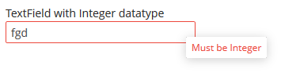
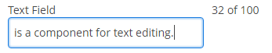

3.5.2.1.46. 文本�件
TextField 是用�文本编辑的�件。它�以用�处��体�性，也�用�输入/显示任何文本信�。
该组件对应的 XML �称：textField
-
ä»�本地消æ�¯åŒ…ä¸è�·å�–æ ‡é¢˜(caption)的文本æ�§ä»¶ç¤ºä¾‹ï¼š
<textField id="nameField" caption="msg://name"/>下图展示了一个简�文本�件示例：

-
Web Client 使用 Halo-based 主题时，在 XML æ��述或者界é�¢æ�§åˆ¶å™¨ä¸å�¯ä»¥ä½¿ç”¨
stylenameå±�æ€§ç»™æ–‡æœ¬æ¡†ç»„ä»¶è®¾ç½®é¢„å®šä¹‰çš„æ ·å¼� :<textField id="textField" stylename="borderless"/>如æ�œä½¿ç”¨ç¼–程的方å¼�è®¾ç½®æ ·å¼�，å�¯ä»¥é€‰æ‹©ä¸€ä¸ªå‰�缀为
TEXTFIELD_çš„HaloThemeclass 常é‡�。textField.setStyleName(HaloTheme.TEXTFIELD_INLINE_ICON);TextField æ ·å¼�:
-
align-center- 使文本在文本框ä¸å±…ä¸æ˜¾ç¤ºã€‚
-
align-right- 使文本在文本框ä¸å±…å�³æ˜¾ç¤ºã€‚
-
borderless- 移除文本框的边框和背景。
-
inline-icon- ä½¿æ ‡é¢˜å›¾æ ‡æ˜¾ç¤ºåœ¨æ–‡æœ¬æ¡†é‡Œé�¢ã€‚
文本框支�自动大�写转�。
caseConvertion�性包�下列�值：-
UPPER- 转�为大写， -
LOWER- 转�为�写， -
NONE- ä¸�转æ�¢(默认值)。用这个选项æ�¥æ”¯æŒ�在输入法è¿�ç»è¾“入（比如，在输入ä¸æ–‡ã€�日文ã€�韩文的时候）
-
-
�创建��数�的文本框，使用数�容器和 property �性。
<data> <instance id="customerDc" class="com.company.sales.entity.Customer" view="_local"> <loader/> </instance> </data> <layout> <textField dataContainer="customerDc" property="name" caption="msg://name"/> </layout>如上所示，界é�¢æ��è¿°ä¸ä¸ºå®�体
Customer定义了数æ�®å®¹å™¨customerDc，并且Customerå®�体有一个nameå±�性。文本æ�§ä»¶é€šè¿‡ dataContainer å±�性è¿�æ�¥åˆ°æ•°æ�®å®¹å™¨ï¼›property å±�性设置为è¦�显示在æ�§ä»¶ä¸çš„å®�体å±�性的å��称。
-
如�文本�件没有��到任何�体�性 (�，未设置数�容器和�性�称)，�以使用
datatypeå±�性设置数æ�®ç±»å�‹ï¼Œæ•°æ�®ç±»å�‹ç”¨æ�¥æ ¼å¼�化æ�§ä»¶å€¼ã€‚datatypeå±�性值å�¯ä»¥æ˜¯åº”用程åº�元数æ�®ä¸æ³¨å†Œçš„任何数æ�®ç±»å�‹ – è§� æ•°æ�®ç±»å�‹æ�¥å�£ã€‚通常，TextField使用下é�¢çš„æ•°æ�®ç±»å�‹ï¼š-
decimal -
double -
int -
long
如æ�œè¯¥å—段有
datatype�性，并且用户输入了一个错误的值，则会显示默认的转�错误消�。下�是一个数�类�是
Integer的文本æ�§ä»¶ç¤ºä¾‹ã€‚<textField id="integerField" datatype="int" caption="msg://integerFieldName"/>如æ�œç”¨æˆ·è¾“入的å—符ä¸�能解æ��为整数，当该æ�§ä»¶å¤±å�»ç„¦ç‚¹æ—¶ï¼Œåº”用程åº�将显示错误消æ�¯ã€‚
默认的消æ�¯æ˜¯åœ¨ä¸»è¯è¨€åŒ…ä¸å®šä¹‰çš„ï¼Œæœ‰è¿™æ ·çš„æ¨¡æ�¿ï¼š
databinding.conversion.error.<type>，比如：databinding.conversion.error.int = Must be Integer -
-
å�¯ä»¥åœ¨ç•Œé�¢ XML æ��è¿°ä¸å£°æ˜�å¼�的定义自己的类å�‹è½¬æ�¢é”™è¯¯æ¶ˆæ�¯ï¼Œä½¿ç”¨
conversionErrorMessageå±�性：<textField conversionErrorMessage="This field can work only with Integers" datatype="int"/>或者在界é�¢æ�§åˆ¶å™¨ä¸é€šè¿‡ä¾¿å±‚çš„æ–¹å¼�创建：
textField.setConversionErrorMessage("This field can work only with Integers"); -
�以为文本�件分�一个验�器 - ��了
Field.Validatoræ�¥å�£çš„类。在datatype对输入的å—ç¬¦æ ¼å¼�进行验è¯�å��，验è¯�器进行进一æ¥çš„验è¯�。例如，è¦�创建一个æ£æ•´æ•°è¾“å…¥æ�§ä»¶ï¼Œéœ€è¦�创建一个验è¯�器类：public class PositiveIntegerValidator implements Field.Validator { @Override public void validate(Object value) throws ValidationException { Integer i = (Integer) value; if (i <= 0) throw new ValidationException("Value must be positive"); } }å�Œæ—¶è®¾ç½®å®ƒä¸ºæ•°æ�®ç±»å�‹æ˜¯
int的文本�件的验�器：<textField id="integerField" datatype="int"> <validator class="com.sample.sales.gui.PositiveIntegerValidator"/> </textField>�数�类�的输入时检查��，验��是在�件失�焦点时执行，而是在调用�件的
validate()方法之å��执行。这æ„�味ç�€æ�§ä»¶ï¼ˆå’Œè¿�æ�¥çš„å®�体å±�性）å�¯èƒ½æš‚时包å�«ä¸�满足验è¯�æ�¡ä»¶çš„值（上例ä¸çš„é��æ£æ•°ï¼‰ã€‚这应该ä¸�æ˜¯é—®é¢˜ï¼Œå› ä¸ºè¦�验è¯�çš„æ�§ä»¶é€šå¸¸ç”¨åœ¨ç¼–辑界é�¢ä¸ï¼Œå®ƒä¼šåœ¨æ��交之å‰�自动调用所有æ�§ä»¶çš„验è¯�。如æ�œè¯¥æ�§ä»¶ä¸�在编辑界é�¢ä¸ï¼Œåˆ™åº”在æ�§åˆ¶å™¨ä¸æ˜¾å¼�调用该æ�§ä»¶çš„validate()方法。
-
TextField支æŒ�å…¶å®�ç�°çš„TextInputFieldæ�¥å�£ä¸å®šä¹‰çš„TextChangeListener。为了ä¸�阻å¡�用户输入，文本å�˜åŒ–事件的处ç�†æ˜¯å¼‚æ¥è¿›è¡Œçš„。textField.addTextChangeListener(event -> { int length = event.getText().length(); textFieldLabel.setValue(length + " of " + textField.getMaxLength()); }); textField.setTextChangeEventMode(TextInputField.TextChangeEventMode.LAZY); -
The
TextChangeEventMode定义文本的�化被��到�务器并触��务端事件的方�。有 3 �预定义的事件模�：-
LAZY（默认） - 文件输入暂�时触�事件。暂�时间�以通过setInputEventTimeout()修改。�使用户在输入文本时没有�生暂�，也会在�能�生的ValueChangeEvent之�强制触�文本更改事件。 -
TIMEOUT- 超时�触�事件。如�在超时周期内进行了多次更改，则将周期内自最�一次更改��生的更改��到�务端。�以使用setInputEventTimeout()设置超时时长。如�在超时期�之��生
ValueChangeEvent，则在它之�触�TextChangeEvent，�件是文本内容自上一个TextChangeEvent以�已��生改�。 -
EAGER- 对äº�文本内容的æ¯�次更改，都会立å�³è§¦å�‘TextChangeEvent事件，通常是由按键触å�‘。请求是独立且一个æ�¥ä¸€ä¸ªåœ°é¡ºåº�处ç�†ã€‚文本å�˜åŒ–事件以异æ¥æ–¹å¼�ä¸�æœ�åŠ¡å™¨äº¤äº’ï¼Œå› æ¤å�¯ä»¥åœ¨å¤„ç�†äº‹ä»¶è¯·æ±‚çš„å�Œæ—¶ç»§ç»è¾“入。
-
-
EnterPressListener�许定义一个在 Enter 键按下时被执行的�作：textField.addEnterPressListener(enterPressEvent -> notifications.create() .withCaption("Enter pressed") .show());
-
ValueChangeListener当用户完æˆ�文本输入时，å�³åœ¨æŒ‰ä¸‹ Enter 键或组件失å�»ç„¦ç‚¹æ—¶ï¼Œå°†è§¦å�‘ValueChangeListener。ValueChangeEventç±»å�‹çš„äº‹ä»¶å¯¹è±¡è¢«ä¼ é€’ç»™ç›‘å�¬å™¨ï¼Œå®ƒæœ‰ä»¥ä¸‹æ–¹æ³•ï¼š-
getPrevValue()返�组件之�的值。 -
getValue()返�组件的当�值。textField.addValueChangeListener(stringValueChangeEvent -> notifications.create() .withCaption("Before: " + stringValueChangeEvent.getPrevValue() + ". After: " + stringValueChangeEvent.getValue()) .show());�以使用 isUserOriginated() 方法跟踪
ValueChangeEvent的��。
-
-
如�文本�件��到�体�性（通过
datasourceå’Œproperty），并且å®�体å±�性具有定义在@ColumnJPA 注解ä¸çš„lengthå�‚数，那么TextField将相应地é™�制输入文本的最大长度。如æ�œæ–‡æœ¬æ�§ä»¶æœªé“¾æ�¥åˆ°å±�性，或者å±�性未定义
length值，或者需è¦�覆盖æ¤å€¼ï¼Œåˆ™å�¯ä»¥ä½¿ç”¨maxLengthå±�性é™�制输入文本的最大长度。值 "-1" 表示没有é™�制。 例如:<textField id="shortTextField" maxLength="10"/>
-
默认情况下，文本æ�§ä»¶æˆªå�»å—符串的å‰�å��ç©ºæ ¼ã€‚å�³ï¼Œå¦‚æ�œç”¨æˆ·è¾“å…¥ " aaa bbb "，则
getValue()方法返å›�并ä¿�å˜åˆ°è¿�æ�¥å®�体å±�性的æ�§ä»¶å€¼å°†ä¸º "aaa bbb"。å�¯ä»¥é€šè¿‡å°†trimå±�性设置为falseæ�¥ç¦�ç”¨ç©ºæ ¼å�»é™¤ã€‚应该注æ„�的是，å�»é™¤ç©ºæ ¼ä»…在用户输入新值时起作用。如æ�œè¿�æ�¥å±�性的值ä¸å·²åŒ…å�«ç©ºæ ¼ï¼Œåˆ™å°†æ˜¾ç¤ºç©ºæ ¼ï¼Œç›´åˆ°ç”¨æˆ·ç¼–辑该值。
-
文本�件始终返�
null而ä¸�是输入的空å—ç¬¦ä¸²ã€‚å› æ¤ï¼Œå�¯ç”¨trimå±�性å��，任何å�ªåŒ…å�«ç©ºæ ¼çš„å—符串都将转æ�¢ä¸ºnull。 -
setCursorPosition()方法å�¯ä½¿æ�§ä»¶è�·å¾—ç„¦ç‚¹å¹¶å°†å…‰æ ‡ä½�置设置为指定索引，索引基äº� 0。
- textField 的�性
-
align - caption - captionAsHtml - caseConversion - contextHelpText - contextHelpTextHtmlEnabled - conversionErrorMessage - css - dataContainer - datasource - datatype - description - descriptionAsHtml - editable - enable - box.expandRatio - height - icon - id - inputPrompt - maxLength - property - required - requiredMessage - stylename - tabIndex - trim - visible - width
- textField çš„å…ƒç´
- textField çš„é¢„å®šä¹‰æ ·å¼�
-
align-center - align-right - borderless - huge - inline-icon - large - small - tiny
- API
-
addEnterPressListener - addTextChangeListener - addValueChangeListener - commit - discard - isModified - setContextHelpIconClickHandler